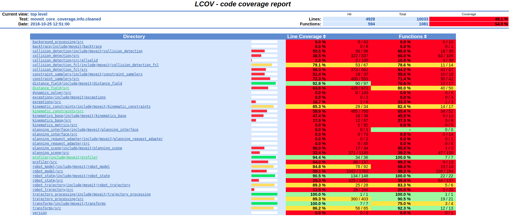

Integration/Unit Tests
How to test changes to MoveIt on various robots, including unit and integration tests.
Note: This is a stub tutorial, to be expanded upon in the future
Getting Started
If you haven’t already done so, make sure you’ve completed the steps in Getting Started.
Integration Test
A Python-based integration test is available for testing higher-level move_group functionality in MoveIt - to run:
rostest moveit_ros_planning_interface python_move_group.test
Test Robots
Panda
From the package panda_moveit_config:
roslaunch panda_moveit_config demo.launch
Fanuc M-10iA
From the package moveit_resources:
roslaunch moveit_resources demo.launch
Unit Tests
Writing Unit Tests
The entire test file, with includes, can be seen here in the moveit_tutorials GitHub project.
MoveIt uses Google Test as a testing framework.
Google Test has two kinds of testing functions. The first, TEST, simply runs the code inside. It takes two names: the name of the test case, also called a test suite, which is a group of several tests that are all related to the same component, and the name of the test. To actually check that your code does what is expected, you can add assertions. ASSERT will stop the test if it fails, and EXPECT will continue running, although the test will still fail.
TEST(MyFirstTestCase, TestName)
{
int x = 0;
x = 5 * 10 + 4;
ASSERT_NE(x, 0); /* NE is 'not equal' */
EXPECT_EQ(x, 54);
}
A Test Fixture loads the same data repeatedly for multiple tests, so common setup code doesn’t have to be duplicated. To make a test fixture, first make a class that derives from ::testing::Test. You can use either the constructor or SetUp to load the information. Let’s use MoveIt’s testing utilities to load a robot model.
class MyTestFixture : public ::testing::Test
{
/* Everything in the class can be protected:. */
protected:
void SetUp() override
{
robot_model_ = moveit::core::loadTestingRobotModel("panda");
}
/* If you need to cleanup the resources any tests are using, you can do it in TearDown(). */
void TearDown() override
{
}
moveit::core::RobotModelConstPtr robot_model_;
};
To make a test that uses the data loaded by this fixture, use TEST_F.
TEST_F(MyTestFixture, InitOK)
{
ASSERT_EQ(robot_model_->getURDF()->getName(), "panda");
ASSERT_EQ(robot_model_->getSRDF()->getName(), "panda");
}
MoveIt also provides a RobotModelBuilder class that helps you build simple robots with the link and joint structure that you need for a specific test. Let’s make a robot that has one branch, making a Y shape.
TEST(MyFirstTestCase, SimpleYRobot)
{
moveit::core::RobotModelBuilder builder("one_robot", "base_link");
builder.addChain("base_link->a", "continuous");
builder.addChain("a->b->c", "fixed");
builder.addChain("a->d", "fixed");
builder.addChain("d->e", "continuous");
builder.addVirtualJoint("odom", "base_link", "planar", "base_joint");
builder.addGroup({}, { "base_joint" }, "base_joint");
ASSERT_TRUE(builder.isValid());
moveit::core::RobotModelConstPtr robot_model = builder.build();
/* Let's check that the link c is rigidly connected to link d, as it should be. */
const moveit::core::LinkTransformMap transforms = robot_model->getLinkModel("c")->getAssociatedFixedTransforms();
auto maybe_link_d = transforms.find(robot_model->getLinkModel("d"));
ASSERT_NE(maybe_link_d, transforms.end());
}
int main(int argc, char** argv)
{
testing::InitGoogleTest(&argc, argv);
return RUN_ALL_TESTS();
}
Running Unit Tests
To run unit tests locally on the entire MoveIt catkin workspace using catkin-tools:
catkin run_tests -iv
To run a test for just 1 package:
catkin run_tests --no-deps --this -iv
To ignore most of the log/print output of the tests:
catkin run_tests --no-status --summarize --no-deps --this
Code Coverage
Test coverage measures the lines of code that are executed while running the test suite.
To accumulate statistics and create a html coverage report, build the code without optimization
and run the special _coverage target:
sudo apt install ros-noetic-code-coverage
catkin config --cmake-args -DENABLE_COVERAGE_TESTING=ON -DCMAKE_BUILD_TYPE=Debug
catkin build
catkin build moveit_core -v --no-deps --catkin-make-args moveit_core_coverage
The output will print where the coverage report is located and it looks similar to the following image:
{kind=link}